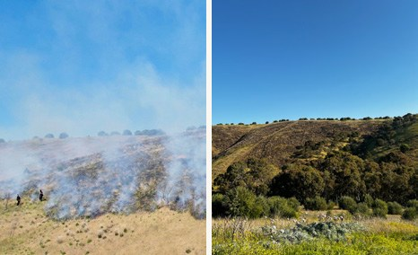
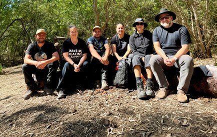

Kaurna Cultural Fire at Kauwi-marnirla
Kaurna fire practitioners are caring for Country with cultural fire again, in a valley ringed by Adelaide’s southern suburbs. Backed by $4.07 million from the Australian Government’s Disaster Ready Fund, the work began with Firesticks and is now led by Kaurna Kardla, a Kaurna organisation in its own right.
Figures from the Disaster Ready Fund grant agreement and the team’s progress reports, October 2025 to June 2026.

Two good waters, in the middle of the suburbs
Kauwi-marnirla means place of ‘two good waters’. The Field River runs west from the southern Mount Lofty Ranges to Gulf St Vincent, cutting through steep valleys and open grassy slopes between Hallett Cove and Sheidow Park. In November 2024 the valley was proclaimed a conservation park, co-named Kauwi-marnirla, on the traditional lands of the Kaurna people.
Before colonisation this was open grassy woodland, kept that way by regular cultural fire. Clearing, grazing and then suburbs changed it, and when livestock came off in the 1990s, olives and other woody weeds spread fast. Without regular, gentle fire, fuel has built up in a valley now surrounded by homes, roads and walking tracks.

A project built to be handed over
In May 2021 a cultural burn in the Adelaide Park Lands became the first on Kaurna Yarta since colonisation. From 2023, Firesticks worked alongside Kaurna Elders and practitioners to re-establish cultural fire on the Adelaide Plains, and the Kaurna fire team grew out of that work.
When we secured the Disaster Ready Fund grant, Firesticks kicked off the project in October 2025, under an agreement written from the start so it could pass to a Kaurna organisation once one existed. In 2026 Kaurna Kardla Ltd was established as an autonomous, Kaurna-led organisation, and we helped novate the agreement to it. The people doing the work on Country now hold the project themselves.
Firesticks has since become the Living Knowledge Network, and the Firesticks name carries on as its cultural fire program.

Open the doors, then follow Kaurna leadership
We secured the grant and hold the agreement with the South Australian Fire and Emergency Services Commission, which administers the Disaster Ready Fund in South Australia for the Australian Government. We fund the team on Country, manage the reporting, and connect them with the agencies, councils and partners who can open up more land and more support. Our Landscape Resilience Program has also supported the new park itself.
The grant has a wider purpose as well. Alongside the burns, it supports state and local government to shape policy that reflects how Traditional Owners manage land with fire today, so the practice can grow well beyond one valley.
On Kaurna Yarta (Country), caring for land and water means recognising the deep cultural knowledge and responsibility that Kaurna Miyurna (People) have carried for thousands of years. I believe that strong land management comes from genuine partnerships with the Kaurna community, where Traditional Owners guide how Yarta is cared for and their voices are central in decision-making.
Cool, patchy fire, guided by Elders
The team plans each season with Kaurna Elders and community, confirming priority sites and reading Country before any fire is lit. In the first three months alone they spent 20 days burning, 15 days monitoring and 10 days walking and reading Country, and checks after the burns are already showing native species coming back.
Fire works hand in hand with weed control. On one volunteer day with the National Parks and Wildlife Service, around 100 olive trees came out, and the team now uses small, controlled burns to clear the woody waste and targeted fire in patches of olive, ash and boxthorn. The Environment Protection Authority tests the water and SARDI monitors the fish, so cultural knowledge and scientific data build the same picture of the river.
Milestones so far
- A cultural burn permit granted during the Fire Danger Season for the first time, followed by a second permit approved within 30 minutes.
- Approval from the Department for Infrastructure and Transport to extend burns onto adjoining land, for a more connected approach along the river.
- Access to Glenthorne National Park, where Elders and knowledge holders have walked Country to plan future work.
- An invitation from Yorke Peninsula Council to assess and burn native grasses at Minalagowie Gum Flat Reserve on Nharangga Country, led by Nharangga Elder Uncle Peter Turner.
- A pathway being set up with TAFE for the team to complete a Certificate III in Conservation and Ecosystem Management.
Practice that shapes policy
The team works with the Country Fire Service, the Metropolitan Fire Service, the Department for Environment and Water and the National Parks and Wildlife Service to bring cultural burning into fire management planning for the Field River. It has run workshops for Green Adelaide’s biodiversity team, Flinders University and Department for Education staff, and a Kaurna fire strategy workshop brought Kaurna and Peramangk community members together.
As trust has grown, getting a burn approved has become faster and simpler. The barriers that remain are bigger than one project, such as access to insurance for Traditional Owner groups, and that is where government and partners can help most.
Part of a wider commitment.
Kauwi-marnirla is one of several places where we back First Nations people to lead the care of their own Country.

Kimberley Land Council
We supported the Kimberley Land Council’s regional ecology work, helping Indigenous rangers monitor species such as the northern quoll and bring traditional knowledge and science together.
Read the story →
Warddeken Mayh
With the Karrkad Kanjdji Trust, First Nations rangers combine fire management and monitoring to protect threatened species on their Country.
See the project →
Protecting Bilbies
Gooniyandi rangers and Environs Kimberley use right-way fire to look after a wild bilby population on Gooniyandi Country.
See the project →Project partners
Led by Kaurna Kardla Ltd under the guidance of Kaurna Elders and community, with Firesticks, now the Living Knowledge Network. Supported by the National Parks and Wildlife Service, Green Adelaide, the Department for Environment and Water, the Environment Protection Authority, SARDI, the Department for Infrastructure and Transport and local councils.
The Igniting Kaurna Cultural Understanding for All at Field River project received funding from the Australian Government through the Disaster Ready Fund, delivered in South Australia by the South Australian Fire and Emergency Services Commission.
Caring for Country starts with listening
How Kaurna practitioners read Country before a burn, and how Kaurna Kardla grew into an organisation of its own.
Read the story →
Caring for Country in practice
Indigenous land management at Field River, and why it matters in an urban landscape.
Read the story →Back First Nations-led care for Country.
Partner with us to help Traditional Owners lead fire and land management on their own Country.